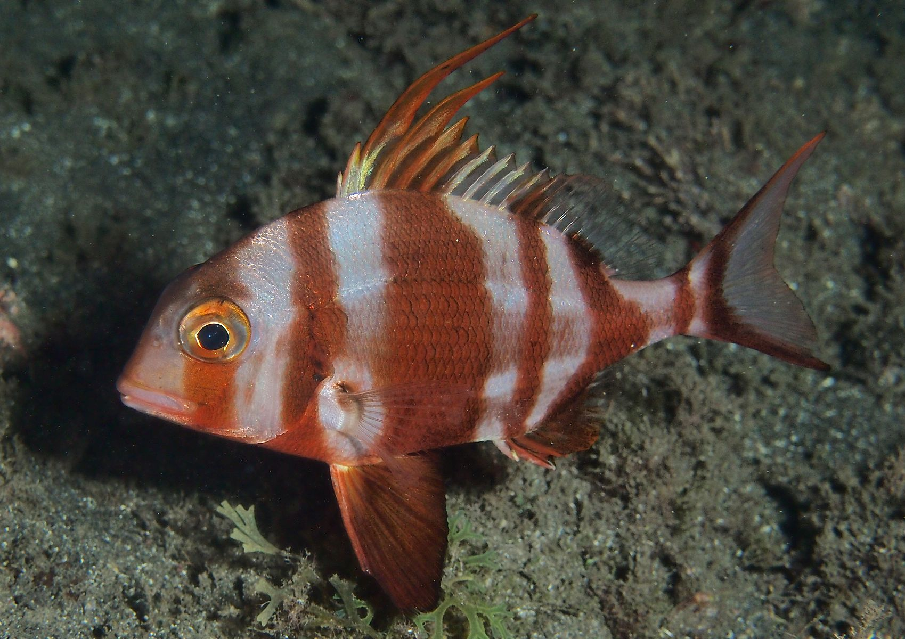
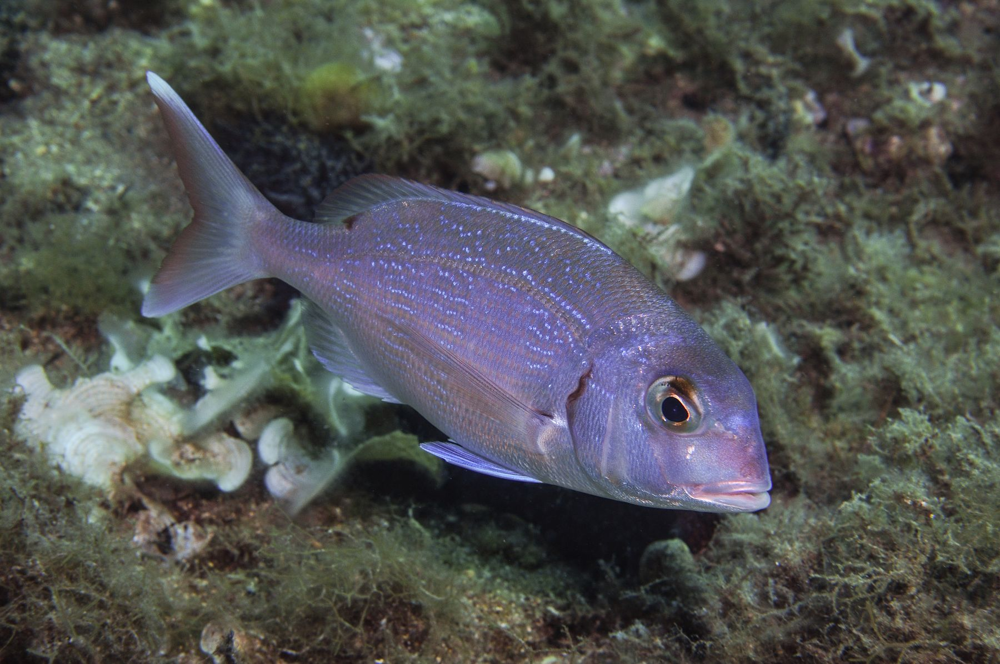

Pagre
Les pagres. Appréciées pour la qualité de leur chair, toutes sont ciblées par la pêche sportive et commerciale. Sur les étalages des poissonniers, on peut les retrouver sous les appellations « brème de mer » ou « dorade ».
Régime
Carnivore
Sociabilité
Solitaire
Territorialité
Non
Rythme Biologique
Diurne
Taille Max
91cm
Taille Min
35cm

Rayure
La coloration est argentée avec des rayures roses à rouge. Ces dernières s'atténuent avec l'âge.

Commun
Les flancs sont roses avec des reflets argentés tandis que le ventre est plus clair. La tête est plus sombre, les nageoires sont également de coloration rosâtre.